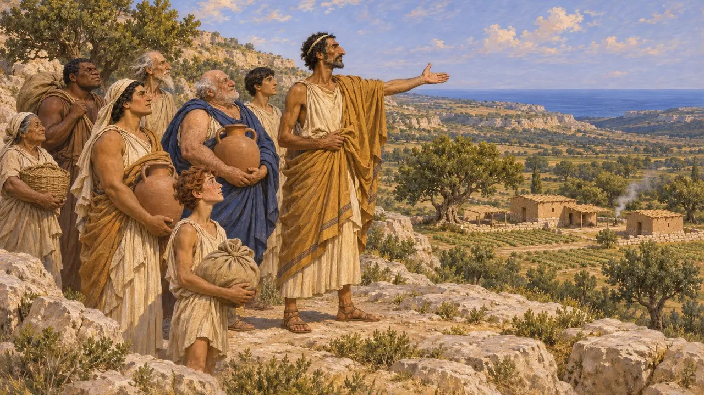
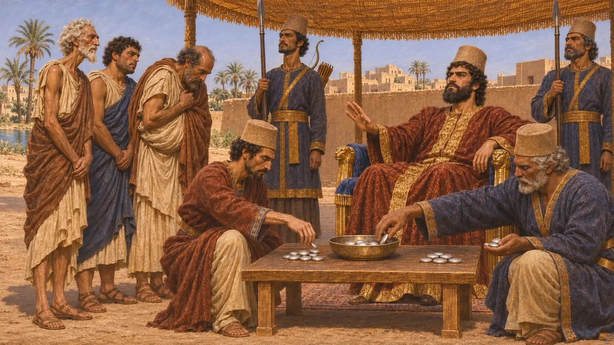
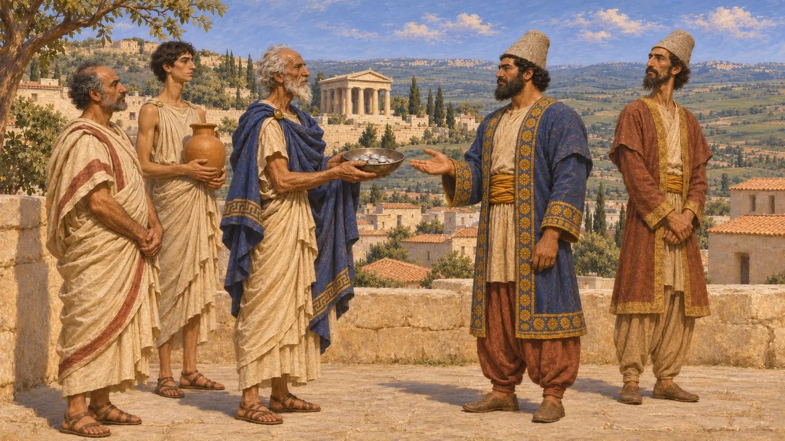
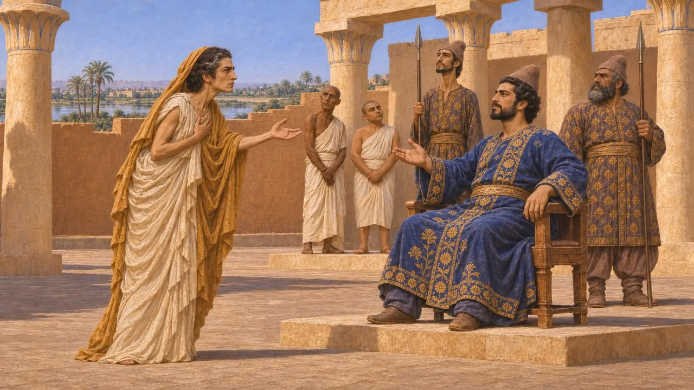
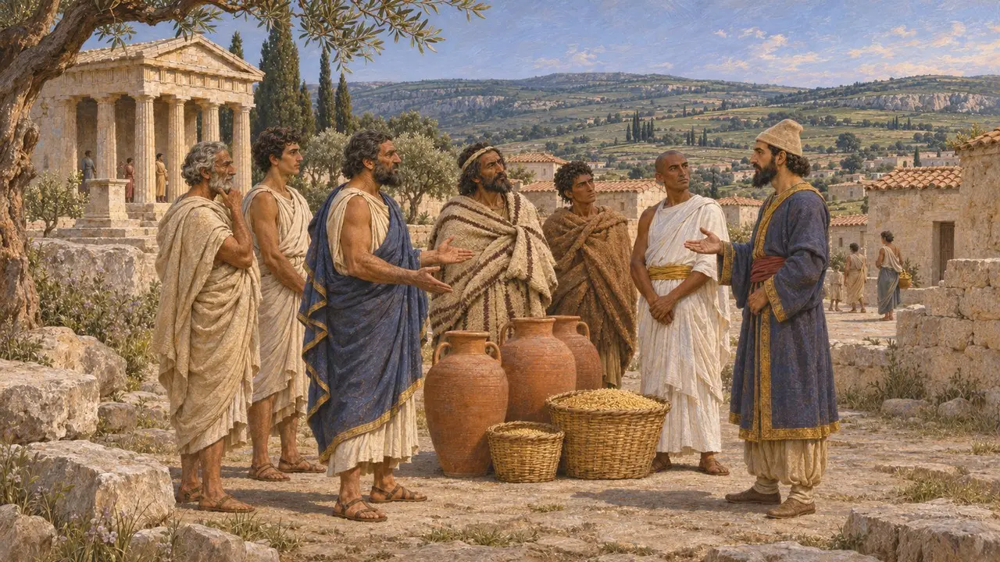

Cirene
Città greca in Cirenaica, in Libia, fondata da coloni di Tera intorno al 630 a.C.
Nel gioco: Livello 2: Il Portalancia
Cirene era la principale città greca della Libia orientale, una colonia di Tera fondata alla fine del VII secolo a.C. Sorgeva al margine occidentale del mondo egizio. Erodoto afferma che si consegnò a Cambise dopo la conquista dell'Egitto, e la sua storia successiva è legata a Barce e al governatore persiano dell'Egitto.
Nel gioco: Il gioco nomina Cirene solo nella Cronaca e negli articoli degli eventi, come la voce sull'assedio di Menfi, che riferisce che inviò doni a Cambise. Non ha una meccanica propria.

La fondazione e i re Battiadi
Racconto anticoErodoto racconta la storia della fondazione nel Libro 4: i coloni di Tera, guidati da Batto, occuparono dapprima un'isola e poi si trasferirono nel sito sulla terraferma di Cirene. La dinastia dei Battiadi governò la città per generazioni. Erodoto collega la colonia a un oracolo di Delfi e riporta sia una versione terea sia una cirenaica.
Herodotus 4.150-159

La sottomissione a Cambise
Racconto anticoErodoto racconta che, dopo la caduta dell'Egitto, i Libi vicini all'Egitto e gli abitanti di Cirene e di Barce si consegnarono a Cambise per timore e gli inviarono dei doni. Secondo lui Cambise accolse con scarso favore il dono dei Cirenei, una somma d'argento, e i soldati se la spartirono. Nessun testo persiano sopravvissuto registra questa sottomissione.
Herodotus 3.13

Estensione del dominio persiano
ContesoGli storici dubitano di quanto si estendesse l'autorità di Cambise sulla Cirenaica. I doni potrebbero indicare un vago riconoscimento della sovranità persiana piuttosto che un dominio diretto. La successiva azione persiana a Barca suggerisce che il governatore d'Egitto rivendicasse una certa autorità, ma se ne discute il grado.
P. Briant, From Cyrus to Alexander, 2002

Barca, Feretima e Ariande
Racconto anticoNel racconto di Erodoto, Arcesilao III di Cirene fu ucciso dopo essere fuggito a Barce, e sua madre Feretime si recò in Egitto a chiedere un esercito al satrapo Ariande. Ariande inviò una forza che assediò Barce e, dopo averla presa, trasferì molti dei suoi abitanti in Battriana. Erodoto dice che l'esercito giunse anche a Euesperidi, e descrive la morte di Feretime in termini raccapriccianti.
Herodotus 4.200-205

La Cirenaica negli elenchi dei tributi
ContesoL'elenco dei distretti di Dario stilato da Erodoto nomina insieme i Libi, Cirene e Barca, con l'Egitto, nel sesto distretto. Non è certo che Cirene versasse una quota regolare, e gli storici trattano il suo elenco con cautela.
Herodotus 3.91
Fonti
- Herodotus 4.150-159
- Herodotus 3.13
- Herodotus 3.91
- Herodotus 4.200-205
- P. Briant, From Cyrus to Alexander, 2002